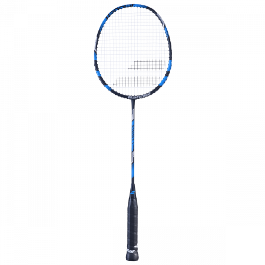
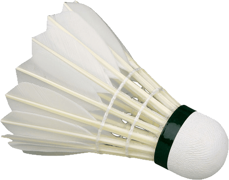
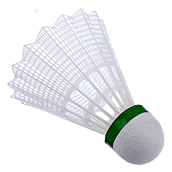

Le badminton
Le Badminton est un sport de raquette qui se joue en simple (1vs1) ou en double (2vs2). Les simple sont catégorisés par sexes, les doubles aussi mais il y un double mixe qui oppose deux duos d'un homme et d'une femme. On joue au badminton avec une raquette et un volants en plume (souvant des plumes d'oies) mais il existe aussi des volants en plastiques qui s'abiment beaucoup moins vite et sont plus légers mais ne sont pas utilisés à haut niveau.
Les règles
Les règles du badminton sont simple :
- Pour gagner un point il faut faire tomber le volant dans le camp adverse. On gagne aussi un point dans le cas où l'adversaire fait une faute (met le volant en dehors des limites du terrain etc..)
- Il est interdit de servire avec le tami de la raquette au dessus de 1m20
- On ne peux pas faire rebondir le volant par terre ou sur son corps
- Toucher le fillet ou passer la raquette ou le corps dans le camp adverse entraine une faute
- Mordre lors du service entraine une faute
Les dimensions du terrain
- En simple : 13,40m sur 5,20m
- En double : 13,40m sur 6,10m
Le badminton est un sport olympique depuis 1992. La fédération internationale de badminton (BWF) a été créé en 1934.
C'est le sport de raquette le plus rapide au monde, le record de vitesse en compétition est de 426km/h. Ce record est détenu par le joueur danois Mads Pieler Kolding depuis le 11 janvier 2017
Ce sport nécessite une très bonne condition physique et de très bonnes qualités technique et tactique.
Le badminton est un sport pratiqué par des millions de gens à travers le monde, il est donc très simple de s'inscrir à un club pour essayer ce sport.
Le classement des joueurs
Au badminton, pour pouvoir être classé, il faut avoir une liscence et faire parti d'une fédération de badminton. En France, la fédération est la FFB, elle gère le classement de l'ensemble des joueurs français. Le classement se divise en plusieurs catégories :
- N1 | N2 | N3
- R4 | R5 | R6
- D7 | D8 | D9
- P10 | P11 | P12

N1 étant le classement le plus haut et P12, le classement le plus bas.
Pour monter dans le classment, il faut gagner des points que l'on peut récuperer en gagnant des matchs dans des tournois et des conpétitions ou en gagnant des match dans le cadre des interclubs. Il faut bien faire la distinction entre les points gagnés durant les tournois et les compétions et les points gagnés durant des matchs d'interclubs. En effet, quand un joueur gagne un match, il gagne le nombre de points que sont adversaire possède avec un certain coefficient. Dans le cadre des tournois et des compétitions, les coéficient sont très bas. Or dans le carde des interclubs, le coefficient est très élevé. En moyenne, les points gagnés pendant un match d'interclubs et égale à la somme des points remporté pendant une compétion si on est finaliste ! C'est en effet un très grand écart !